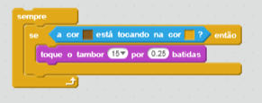
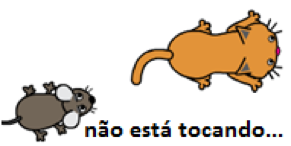
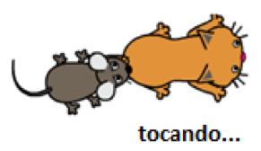

Tem o valor "true" se a primeira cor estiver tocando na segunda cor
A primeira cor está dentro do ator, enquanto a segunda pertence ao cenário ou a qualquer ator.
  
Para escolher uma cor, obtenha primeiro a pipeta, clicando no quadrado. Use a pipeta para clicar na cor que deseja. A cor escolhida aparecerá no quadrado.